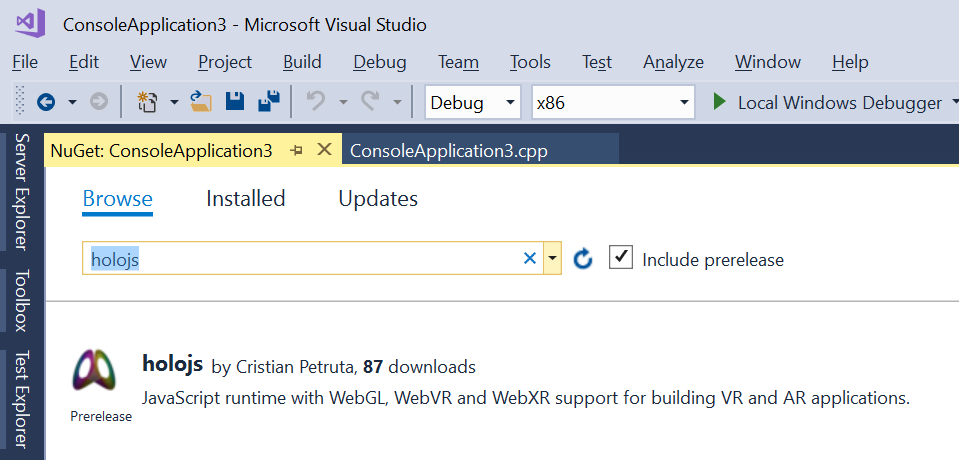
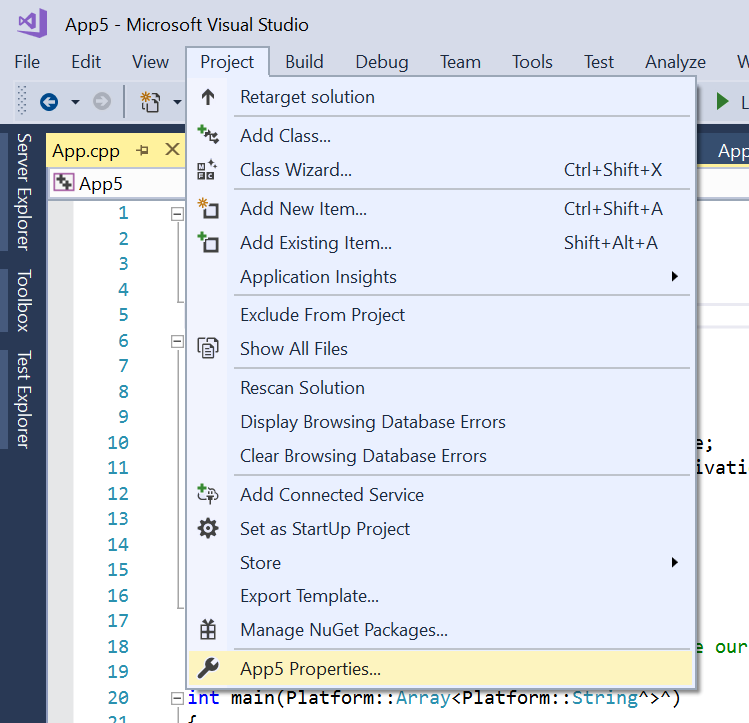
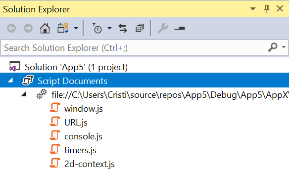

Hosting HoloJs in a UWP C++ application
After following the steps outlined bellow, you will have a UWP application that is executing a 3D application
written in JavaScript and WebGL.
Requirements:
- Visual Studio 2017 with C++ and UWP development components installed
Steps:
- In Visual Studio, create a new UWP C++ DirectX:

- Add the HoloJs Nuget package. Since its a pre-release package, make sure to check the "Include
prerelease" checkbox when searching.

-
In app.cpp, replace the body of the main function with this code:
// Create a host object
auto scriptHost = ref new HoloJs::UWP::HoloJsScriptHost();
// Create a default configuration
auto viewConfiguration = ref new HoloJs::UWP::ViewConfiguration();
// Initialize and run
if (scriptHost->initialize(viewConfiguration)) {
auto uri = ref new
Platform::String(L"http://holojs.azurewebsites.net/v7/vr-cubes.xrs");
scriptHost->startUri(uri);
}
return 0;
- You can remove all other code that was generated for the DirectX template app. With HoloJs, you only
need the main function in app.cpp.
-
Press F5 to run.
Without a VR headset, you should get a window that renders cubes floating in space:

If you have a VR headset connected, you should see cubes floating around you in a virtual room:
Debugging scripts running inside HoloJs
When HoloJs is hosted inside a UWP app, you use Visual Studio to debug the scripts.
- Enable debugging in HoloJs by adding this line of code before you initialize the script host:
scriptHost->enableDebugger();
-
Switch the debugger to "Script" mode
-
Go to project properties

-
Switch debugger to "Script Only"

Note: Make sure you change the debugger type for the active
Configuration and Platform
-
Press F5 in Visual Studio. The app will start and you can use regular Visual Studio debugging commands to break in, add breakpoints, continue, etc.
Note: The list of running scripts is added to the Solution Explorer as "Script Documents". You can open JavaScript files from there and add breakpoints.
